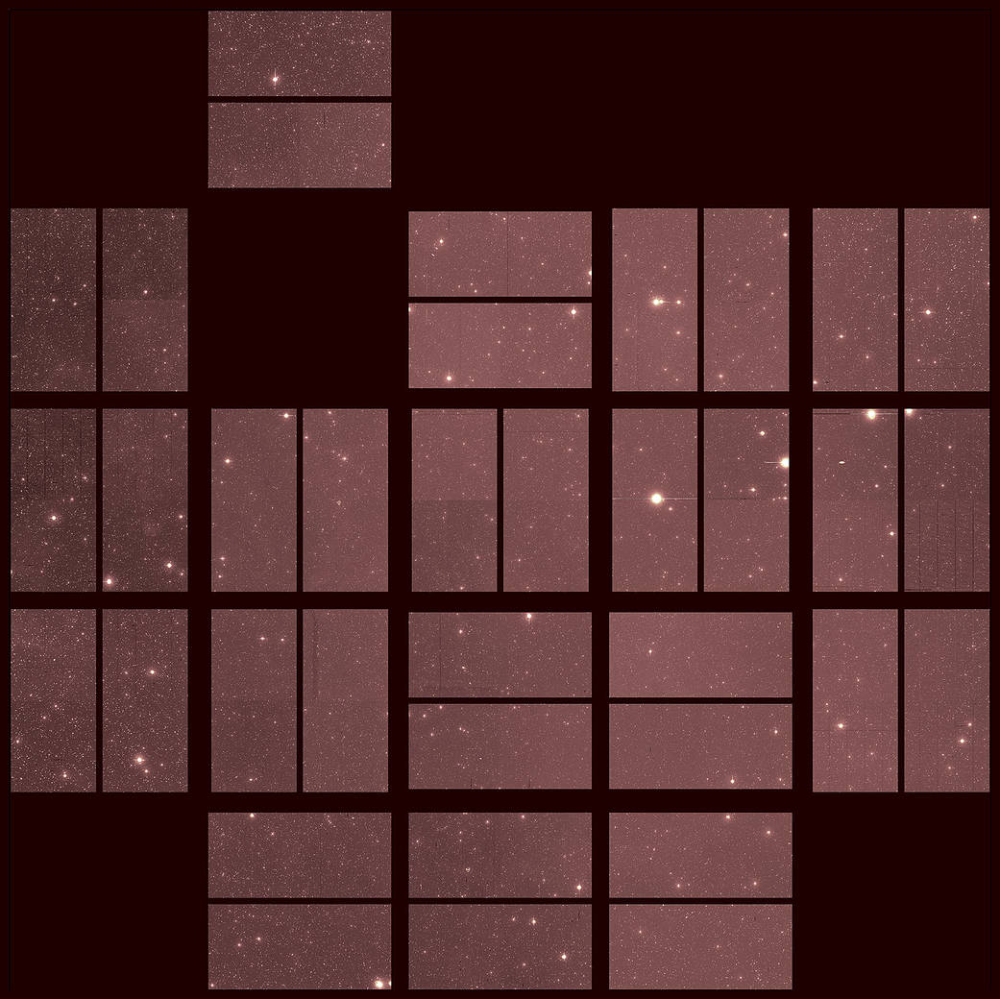

The Kepler Space Telescope, often simply referred to as Kepler, is one of NASA's most renowned missions, dedicated to the search for Earth-like planets orbiting other stars. Launched in 2009, Kepler's primary mission was to determine how common Earth-sized planets in the habitable zones of sun-like stars are within our Milky Way galaxy.
Kepler utilized the transit method to detect exoplanets, observing the slight dimming of starlight as a planet passed in front of its host star. Over its operational lifetime, Kepler observed over 530,000 stars and confirmed more than 2,600 exoplanets, many of which are similar in size to Earth. Its findings suggest that rocky planets in habitable zones are common, providing invaluable insights into the potential for life elsewhere in the universe.
Originally planned for a 3.5-year mission, Kepler's success led to several mission extensions. However, after nearly a decade in space and the loss of its second reaction wheel, which was crucial for pointing the spacecraft, Kepler's mission was officially retired in 2018. With a development and launch cost of about $600 million, Kepler's impact on exoplanet science and our understanding of our place in the cosmos has been profound. Its legacy continues as data from its observations are still yielding new discoveries, furthering our knowledge of the universe and the myriad worlds it contains.
 Next